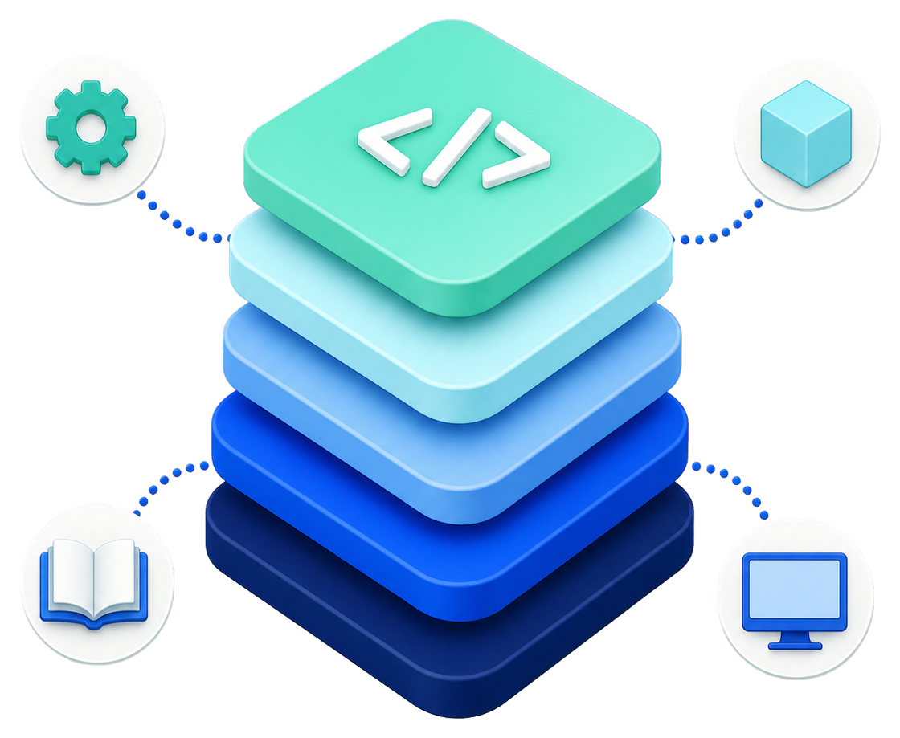

AI-authored · human-directed
A programming language built all the way down to its own operating system.
Windvale is a source-available E-Worker Inc experiment bringing the language, compiler, tools, and operating system into one project. The goal is simple: make the whole computing stack possible to read, test, and understand.
Runs today on
Windows
Linux
Browser

Project progress
Five parts. One shared mission.
Hover, focus, or tap a card for the evidence and the next step. Updated from project data.
These indicators describe qualification evidence, not percentage-complete estimates. A qualified gate proves one defined milestone—it does not mean the whole component is finished.
Development milestones
A closer look inside the stack.
These smaller milestones show which foundations are qualified and where active development is focused.